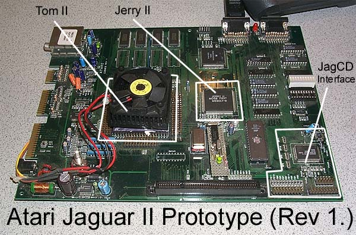
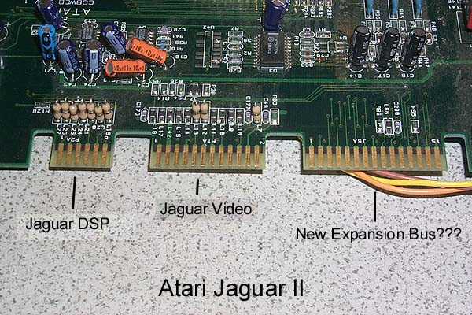
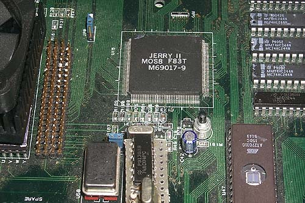

In
1995 rumors began to circulate that Atari was working on a replacement
for the Atari Jaguar console. Codenamed "Midsummer"
this new Jaguar would have a new Tom II and Jerry II chipset with better
graphics, sound, more expansion and a built-in CDROM (There was also a system called JagDuo
circulating in rumor circles but confusion existed as to whether the JagDuo
was just a regular Jaguar with built-in CDROM or if in fact it was the
Jag II with built-in CDROM.) Tom II is so large and generated
so much heat, it required its own cooling fan which has to be hooked up
to a seperate power source. After tinkering with
the unit for a few days and fixing a few broken wires, I finally fired
it up with Tempest 2k, the console works, but I find no improvements in
the graphics, sound or game play, so unlocking and unleashing the enhanced
features that may be present in the Jaguar II are unknown.... but it is
backward compatible.

Another interest aspect is the Jaguar
II's expansion connectors. The Jaguar sported
both and A/V connector and a DSP Connector.
The Jag II does one better with a third
expansion connector for some unkown future
expansion devices. Also if you look at
the motherboard, you'll notice a 2nd unpopulated
bank of memory for the Jaguar II.

Keeping with the
whole theme of the codename of the console: "Midsummer"
as in William Shakespears
"Midsummers night dream" The new Tom & Jerry II
chipset was also
given codenames reflecting the characters from
the well known play:
Oberon & Puck
(a label underneath
this unit says Oberon &Theseus.)
Unfortunately, just
as the play's own message says "Love is blind" so was
the fact that Atari
was blindly travelling down a short and windy road headed
for its painful
demise as 1996 approached and with it the end of the Jaguar,
the hopeful Jaguar
II and Atari itself as the company would be reverse
merged into JTS
Corp, a small hard drive maker who quickly squandered
Atari's money and
liquidated the warehouse of Atari Lynx & Jaguar stock,
then filed for bankruptcy
in 1998.
{kind=link}